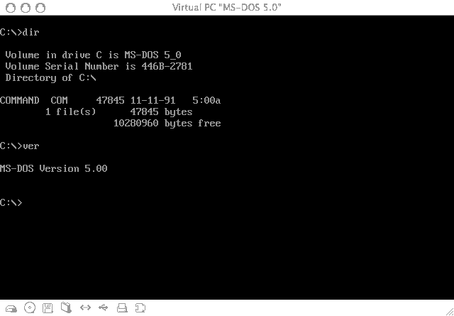
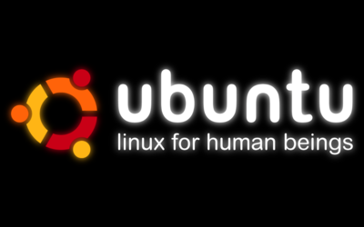

CoderFaire
August 25, 2012
GUIs Come and Go, CLI is Forever
Agenda
- Unix Philosophy
- Bash Basics
- Keyboard Navigation
- Bang Commands
- Pipes
- Handy Shell Utilities
- A Short Story
About Me
@brian_dailey
github.com/briandailey
Circa 1993
Circa 2001-2006
2006-2011
2011-Present
Why learn to use the shell?
You're probably already using it.
It works nearly everywhere.
Don't reinvent the wheel.
Those who don't understand Unix are condemned to reinvent it, poorly.
– Henry Spencer
Concise. Expressive.
Disadvantages?
A slight learning curve.
There is one.
Unix Philosophy 101
Douglas McIlroy
Focus Scope
Make each program do one thing well. To do a new job, build afresh rather than complicate old programs by adding new features.
Text As The Universal Interface
Expect the output of every program to become the input to another. Don't insist on interactive input.
Iterate
Design and build software, even operating systems, to be tried early. Throw away the clumsy parts and rebuild them.
Tools > Unskilled Help

Even if you have to detour to build the tools and expect to throw some of them out after you've finished using them.
Ok, how do I get it?
- Linux Live-Boot
- Mac OS X with Homebrew
- Install Cygwin
- VMWare / VirtualBox
- SSH to Server
bash
dash
zsh
fish
There are many flavors.
Bash Basics
Keyboard Basics
Example Time
Getting Around
psql (9.1.3)
mydb=# select sum(population_count) from reports_demographic
d oin reports_geographicunit g on d .geographic_unit_id = g.id
where d.year = 2015 and g.geographic_type = 'zipcode';
ZOMG! I misspelled "join!"
psql (9.1.3)
mydb=# select sum(population_count) from reports_demographic
d oin reports_geographicunit g on d .geographic_unit_id = g.id
where d.year = 2015 and g.geographic_type = 'zipcode';
Wrong: Hold down arrow key
until you pass out from exhaustion.
Right: Alt+B to move the cursor back a few words.
Keyboard Navigation
↑↓ - Scroll through previous commands Ctrl+U - Clear all before cursor Ctrl+K - Clear all after cursor Ctrl+A - Home Ctrl+E - End Alt+B - Move cursor back one ”word” (Similar to Ctrl+←) Alt+F - Move cursor forward one ”word” (Ctrl+→) Alt+Bckspc - Delete previous ”word” (Also, Ctrl+W) Alt+. - Recall last command argument Tab - Autocomplete commands, files, folders, and more. Ctrl+_ - Undo CTRL+R - Reverse history search Esc, T - Swap last two words Ctrl+L - Clear the screen
Only the tip of the iceberg, really.
But There's More!
The GNU Readline Library
Near-Universal adoption.
Once you learn it...
Tab Completion
# One tab will auto complete if one match is found.
$ vi ind[Tab]
$ vi index.html
# Double tab will show available matches.
$ l p[Tab][Tab]
package.json plugin/
It's not just file names...
bash-completion (Mac OS X, Ubuntu)
makes it context-aware.
$ git c[Tab][Tab]
checkout cherry-pick citool clone commit credential-cache
cherry ci clean co config credential-store
More Shell Basics
Argument Shortcuts
!! - Run the last command (same as ↑+return)
!my - Runs last cmd starting with ”my”, e.g., ”mysql -uroot -p db”
!my:p - Find last cmd starting with ”my” and print it (don't execute)
vi !$ - Replaces !$ with last argument in previous command
vi !* - Insert all arguments from previous command
A very useful (and more comprehensive) list is available here:
http://mail.linux.ie/pipermail/ilug/2006-May/087799.html
Pipes!
The humble pipe...
|
...allows you to use programs as filters.
>
Redirect output to a file (overwrite).
>>
Append output to a file.
<
Read file into input.
tee
Redirect to a file and pass to standard out.
&>
Redirect both stderr and stdout to a file.
If pipes are the mortar...
awk cat cut grep head join less sed sort split tail tr uniq wc xargs
then these are the bricks.
curl -s http://nashville.coderfaire.com/talks/ | grep \"cftalktitle\"
<a name="cfn120KN"><span class="cftalktitle">Develop With Purpose</span></a><br />
<a name="cfn12001"><span class="cftalktitle">ElasticSearch: Where NoSQL Meets Full-Text Search</span></a><br />
<a name="cfn12002"><span class="cftalktitle">Automated understanding in the Cloud</span></a><br />
<a name="cfn12003"><span class="cftalktitle">GUIs Come and Go, CLI is Forever</span></a><br />
<a name="cfn12004"><span class="cftalktitle">Intro to Erlang</span></a><br />
<a name="cfn12005"><span class="cftalktitle">Tools for Surviving the Zombie Apocalypse: Microcontrollers & Gadgeteer</span></a><br />
<a name="cfn12006"><span class="cftalktitle">Grokking HTTP</span></a><br />
<a name="cfn12007"><span class="cftalktitle">LESS vs. SASS – CSS Precompiler Showdown</span></a><br />
<a name="cfn12008"><span class="cftalktitle">Redis for fun and profit</span></a><br />
<a name="cfn12009"><span class="cftalktitle">Codetastic Part 1 of 2 – Simple is Hard</span></a><br />
<a name="cfn12010"><span class="cftalktitle">Codetastic Part 2 of 2 – Testing needs Seams</span></a><br />
<a name="cfn12011"><span class="cftalktitle">Data Networking for Developers</span></a><br />
<a name="cfn12012"><span class="cftalktitle">Concurrent Updates Without Locks</span></a><br />
<a name="cfn12013"><span class="cftalktitle">Going Deeper with jQuery Mobile</span></a><br />
<a name="cfn12014"><span class="cftalktitle">Getting Results with Scrum & Kanban</span></a><br />
<a name="cfn12015"><span class="cftalktitle">Adventures in Building Our Dream Interface</span></a><br />
<a name="cfn12017"><span class="cftalktitle">Writing Code That is Easy to Change</span></a><br />
<a name="cfn12018"><span class="cftalktitle">Titanium Mobile Development</span></a><br />
<a name="cfn12019"><span class="cftalktitle">Mobile JavaScript Frameworks 2012</span></a><br />
Pipe curl output to a filter (grep), to more filters (sed and head).
~ curl -s http://nashville.coderfaire.com/talks/ \
| grep \"cftalktitle\" -A1 \
| sed 's/<[^>]*>//g' | head
Develop With Purpose
Speaker: Jon Shearer
--
ElasticSearch: Where NoSQL Meets Full-Text Search
Speaker: Andrew Raines
--
Automated understanding in the Cloud
Speaker: Steve Brownlee
--
GUIs Come and Go, CLI is Forevercurl -s http://nashville.coderfaire.com/talks/ \
| grep \"cftalktitle\" -A1 \
| sed 's/<[^>]*>//g' | tr "\n" "|" | sed 's/--/%/g' | tr "%" "\n"
Develop With Purpose|Speaker: Jon Shearer|
|ElasticSearch: Where NoSQL Meets Full-Text Search|Speaker: Andrew Raines|
|Automated understanding in the Cloud|Speaker: Steve Brownlee|
|GUIs Come and Go, CLI is Forever|Speaker: Brian Dailey|
|Intro to Erlang|Speaker: Bryan Hunter|
|Tools for Surviving the Zombie Apocalypse: Microcontrollers & Gadgeteer|Speaker: Ian Lee|
|Grokking HTTP|Speaker: Ben Ramsey|
|LESS vs. SASS – CSS Precompiler Showdown|Speaker: Kevin Powell|
|Redis for fun and profit|Speaker: Matt George|
|Codetastic Part 1 of 2 – Simple is Hard|Speaker: Jim Siegienski|
|Codetastic Part 2 of 2 – Testing needs Seams|Speaker: Eli Tapolcsanyi|
|Data Networking for Developers|Speaker: Jason Myers|
|Concurrent Updates Without Locks|Speaker: Robert T. Bauer|
|Going Deeper with jQuery Mobile|Speaker: Andy Matthews|
|Getting Results with Scrum & Kanban|Speaker: Brendan Wovchko & Chris Hefley|
|Adventures in Building Our Dream Interface|Speaker: Tim Moses|
|Writing Code That is Easy to Change|Speaker: Jesse Bunch|
|Titanium Mobile Development|Speaker: Andrew McElroy|
|Mobile JavaScript Frameworks 2012|Speaker: Lauren OMeara|
Top committers on a project by number of commits.
django (master) git shortlog -s
2779 Adrian Holovaty
298 Alex Gaynor
1 Alex Ogier
2 Alexey Boriskin
9 Aljosa Mohorovic
3 Andrei Antoukh
26 Andrew Godwin
1 Andrews Medina
1 Andy Dirnberger
1 Angeline Tan
[...snip...]
django (master) git shortlog -s | sort -rnScrolls by too fast!
django (master) git shortlog -s | sort -rn | head
2779 Adrian Holovaty
1869 Malcolm Tredinnick
1667 Russell Keith-Magee
867 Jannis Leidel
858 Jacob Kaplan-Moss
458 Luke Plant
412 Aymeric Augustin
335 Gary Wilson Jr
298 Alex Gaynor
296 Ramiro Morales
Test File: Provider Database
~ wc -l npidata_20050523-20120709.csv
3717914 npidata_20050523-20120709.csv~412M
Get file header positions...
~ head -1 npidata_20050523-20120709.csv | tr , "\n" | less -N
1 "NPI"
2 "Entity Type Code"
3 "Replacement NPI"
4 "Employer Identification Number (EIN)"
5 "Provider Organization Name (Legal Business Name)"
6 "Provider Last Name (Legal Name)"
7 "Provider First Name"
8 "Provider Middle Name"
9 "Provider Name Prefix Text"
[...snip...]
Replace commas with pipes...
~ pv npidata_20050523-20120709.csv | sed 's/",/"|/g' > piped.txt
543MB 0:01:27 [6.77MB/s] [======> ] 12% ETA 0:10:04
Proof it worked...
awk 'BEGIN { FS="|" } { print NF }' piped.txt | uniqReplace zipcodes with five-character limit.
~ head -10 piped.txt | \
awk -v Q='"' '
BEGIN { FS="|"; OFS="|" }
{ $33 = substr($33, 0, 6) Q; print $0 }
' | \
cut -d\| -f33
"Provi"
"68847"
"32204"
"28304"
"75751"
"77090"
"94559"
"43615"
"10010"
"79329"How many doctors are practicing in east Nashville (37206)?
~ pv piped.txt | cut -d\| -f33 | grep \"37206 | wc -l
543MB 0:01:27 [6.77MB/s] [======> ] 12% ETA 0:10:04
145
Create a sample dataset, 1/10th of the file.
awk 'BEGIN { srand() } rand() >= .1' piped.txt | \
tee sample.txt | \
wc -l
371355Create a sample dataset, 1/10th of the file, text me when it's done.
echo $(awk 'BEGIN { srand() } rand() >= .1' piped.txt | \
tee sample.txt | \
wc -l) | ./twilio-sms 917-555-1234
Shell Aliases
DRY!
# List files in friendly format
alias l='ls -lh'
# Do not allow updates or deletes without WHERE clause.
alias mysql='mysql --i-am-a-dummy'Save to ~/.bashrc (on Ubuntu) to autoload.
Alias Limitation
# Usage: fun [name]
alias fun='echo $1 is having fun!'
$ fun Brian
is having fun! Brian
Alias is only useful as the beginning of a command.
Arguments don't work well, can't do loops, etc.
Answer? Functions and/or shell scripts!
phpargs() {
# $1 is the first argument passed
# get php page from manual mirror
curl -s http://us3.php.net/$1 | \
# pull all text in target div
sed -n '/<div class="methodsynopsis dc-description">/,/<\/div>/p' | \
# strip out HTML tags
sed 's/<[^>]*>//g' | \
# strip out line feed
tr -d "\n"
# add ending line
echo
}$ phpargs in_array
bool in_array ( mixed $needle, array $haystack [, bool $strict ] )Once upon a time...
Donald Knuth
Literate programming, Pascal, WEB
vs
Douglas McIlroy
Inventor of pipes, wielder of Unix Philosophy

|
|
Mission
Read a file of text, determine the n most frequently used words, and print out a sorted list of those words along with their frequencies.
Knuth
Beautiful, literate code.
10+ pages of WEB
McIlroy
Sure, that's nice, but...
tr -cs A-Za-z '\n' |
tr A-Z a-z |
sort |
uniq -c |
sort -rn |
sed ${1}q
McIlroy
The simple pipeline given above will suffice to get answers right now, not next week or next month. It could well be enough to finish the job.
- Source
{kind=link}
THE END
Questions?
Thanks!
@brian_dailey